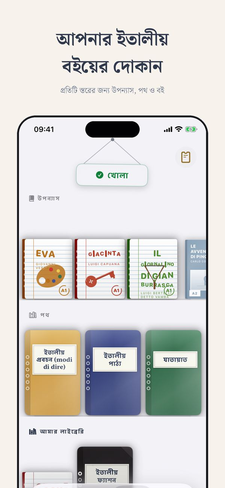
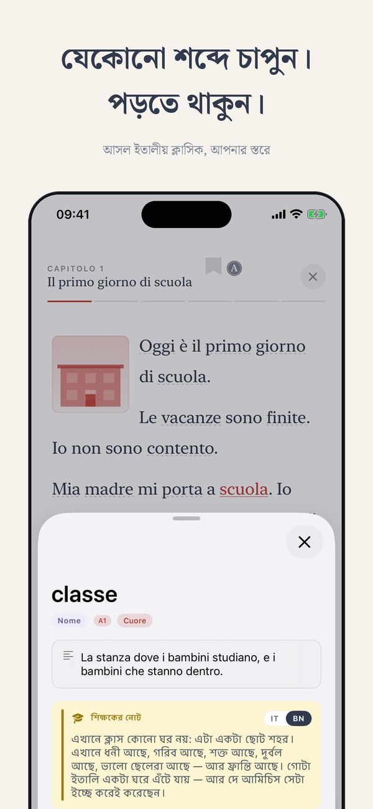
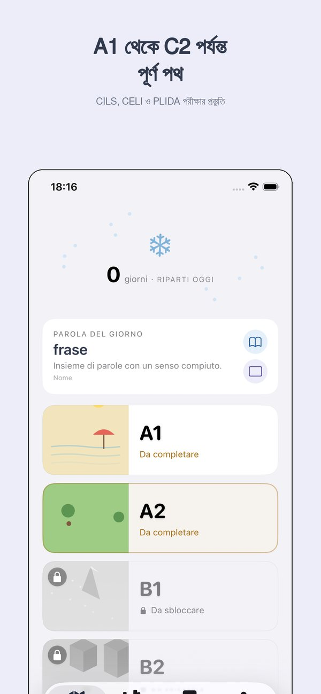
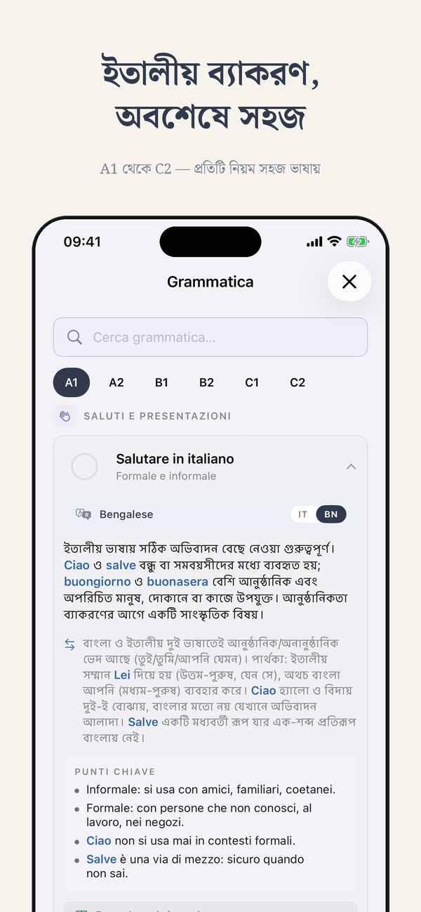
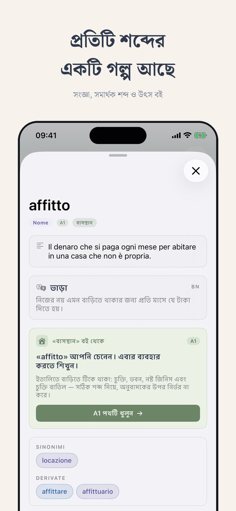
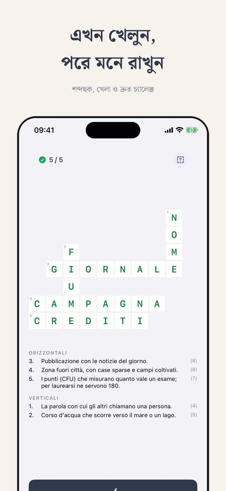

তোমাকে ভালোবাসি, বুঝি, শেখাই।
ইতালীয় শিখুন — প্রথম শব্দ থেকে দান্তে পর্যন্ত।
Ti হল সেই iOS অ্যাপ যা ইতালিতে বসবাসকারী (বা বসবাস করতে যাওয়া) বিদেশী ও অভিবাসীদের জন্য তৈরি — যে ইতালীয় ডাকঘরে, কফি শপে, নাগরিকত্ব সাক্ষাৎকারে সত্যিই কথা বলা হয়। সব কিছু আপনার নিজের ভাষায় ব্যাখ্যা করা।
A1 কোর্সের অর্ধেক উন্মুক্ত, নিবন্ধন ছাড়াই
A1 দিয়ে শুরু করুন ↗︎Ti কেন আলাদা
আপনি হয়তো Duolingo চেষ্টা করেছেন। হয়তো Babbel। ওগুলো ঠিক আছে — পর্যটকদের জন্য। Ti সেই মানুষের জন্য যে সত্যিই ইতালিতে থাকে (বা থাকতে যাচ্ছে)।
একজন সত্যিকারের শিক্ষক দ্বারা
Ti তৈরি করেছেন Alessio — বহু বছরের ক্লাসরুম অভিজ্ঞতা সম্পন্ন একজন ইতালীয় শিক্ষক, কোনো গেম স্টুডিও নয়।
প্রথম দিন থেকে CEFR
একই ছয়টি স্তর (A1 →︎ C2) যা বিশ্ববিদ্যালয়, নিয়োগকর্তা এবং নাগরিকত্ব পরীক্ষা ব্যবহার করে।
আপনার ভাষা প্রথম
সব ব্যাখ্যা বাংলা, ইংরেজি, আরবি, চীনা, তাগালগ, ইউক্রেনীয় এবং আরও ৮টি ভাষায় উপলব্ধ।
Ti-এর ভিতরে কী আছে
CEFR পথ
ছয়টি স্তর, ডজন ডজন ধাপ। শব্দভান্ডার, ব্যাকরণ, শ্রবণ ও পড়া — একটি স্পষ্ট মানচিত্রে।
থিম্যাটিক নিউজস্ট্যান্ড
সত্যিকারের পড়ার অনুশীলন: সংস্কৃতি, খাবার, সিনেমা, সাম্প্রতিক ঘটনা — সবসময় আপনার স্তরে।
গ্রেডেড ক্লাসিক
Pirandello, Calvino ও Manzoni পড়ুন এমন সংস্করণে যা আপনার সাথে বেড়ে ওঠে।
১৪ ভাষায় অভিধান
৩,০০০-এর বেশি শব্দ অনুবাদ, উদাহরণ এবং স্থানীয় অডিও সহ।
খেলা ও অনুশীলন
ক্রসওয়ার্ড, মিলানো, শ্রুতিলিপি। বিরক্তিকর অংশগুলো খেলার মতো।
স্থানীয় অডিও
প্রতিটি শব্দ ও সংলাপ রেকর্ড করা যাতে আপনি প্রকৃত ইতালীয় শুনতে পান।
ছয়টি স্তর, একটি স্পষ্ট পথ
আপনি যেখান থেকেই শুরু করুন, পরে কী আসবে সবসময় জানবেন।
টিকে থাকা
কফি অর্ডার, নিজের পরিচয়, সহজ প্রশ্ন।
সামলানো
দৈনন্দিন কাজ, ফরম, অ্যাপয়েন্টমেন্ট। নাগরিকত্বের স্তর।
পরিচালনা
ইতালীয়তে কাজ, স্কুল, সামাজিক জীবন।
আলোচনা
বিতর্ক, ব্যাখ্যা, খবর ও টিভি বোঝা।
সূক্ষ্মতা
বাগধারা, রেজিস্টার, সাহিত্য, বিমূর্ত বিষয়।
দক্ষতা
প্রায় স্থানীয়। Dante, চুক্তি, উপভাষা ও কৌতুক।
সাধারণ প্রশ্ন
Ti কি বিনামূল্যে?
আপনি বিনামূল্যে শুরু করতে পারেন। উন্নত স্তর ও কিছু বৈশিষ্ট্য একটি ছোট পরিশোধিত পরিকল্পনায় — মাসিক, বার্ষিক বা আজীবন।
Ti কি ইতালীয় নাগরিকত্ব পরীক্ষার জন্য ভালো?
হ্যাঁ। A2 স্তর (CILS) আপনার প্রয়োজনীয় শব্দভান্ডার ও ব্যাকরণ কভার করে।
শুরু করার জন্য কিছু ইতালীয় জানা কি দরকার?
না। A1 থেকে শুরু করুন। সব কিছু আগে বাংলায়, পরে ইতালীয়তে ব্যাখ্যা করা হয়।
Ti কোন কোন ভাষা সমর্থন করে?
চোদ্দটি: বাংলা, ইংরেজি, স্প্যানিশ, ফরাসি, জার্মান, পর্তুগিজ, ডাচ, রোমানিয়ান, আলবানিয়ান, ইউক্রেনীয়, চীনা, আরবি, তাগালগ, তিগ্রিনিয়া।
শুরু করতে প্রস্তুত?
Ti iOS-এ। বিনামূল্যে শুরু করুন।
A1 কোর্সের অর্ধেক উন্মুক্ত, নিবন্ধন ছাড়াই
A1 দিয়ে শুরু করুন ↗︎See Ti in action
The CEFR path, exercises, edicola and graded Italian classics — from A1 to C2, in 14 languages.






Thuis Italiaans থেকে আরও
স্তর অনুযায়ী বই · অনলাইনে ইতালীয় ভাষার পাঠ · ৭০০+ বিনামূল্যে অনুশীলন